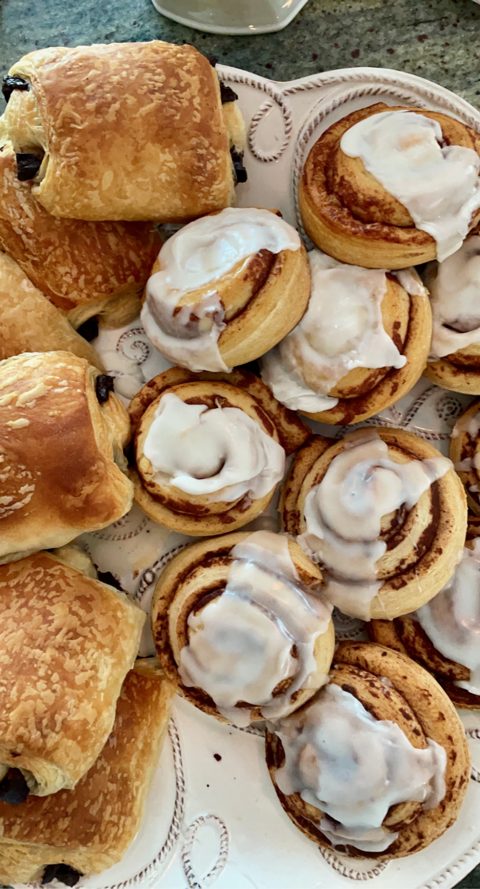
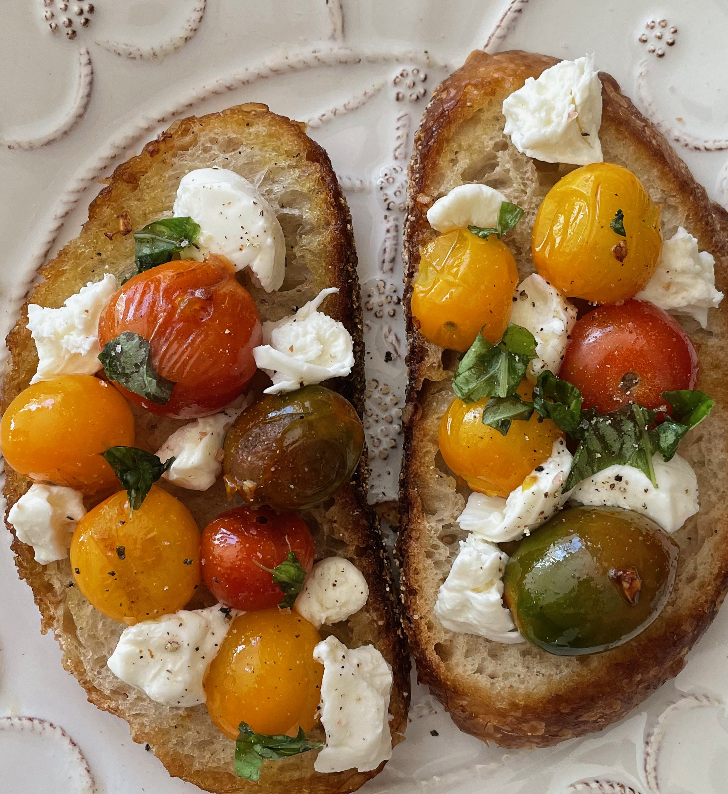

My name is Kylie Faherty. I am currently a Sophomore at Elon University, double majoring in Strategic Communications and Political Science. As a dedicated student, I value being involved on campus and have found my niche in leadership through my sorority Zeta Tau Alpha, pre-law fratenity Phi Alpha Delta, and Elon's Student Government Assocaition.
I am an avid at home cook, baker, and music fanatic! I love listening to music while I cook. My all time favorite song is the Tide is High by Blondie.
